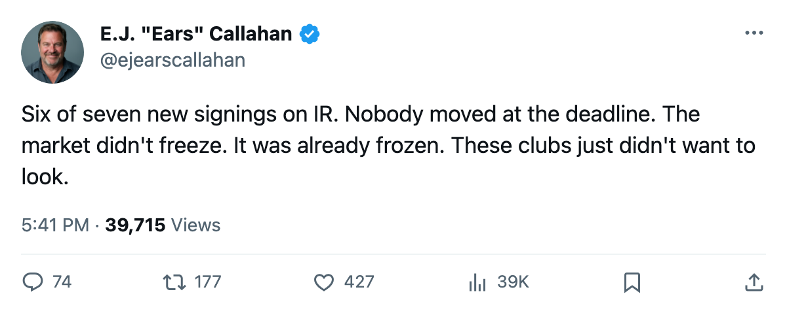
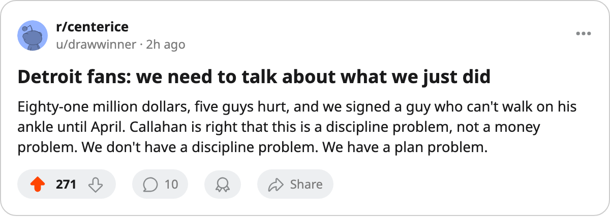

RUMOR METER: 6 of 7 New Signings Are on IR. No Trade Filed at the Deadline. The Streak Lives. 🔥🔥
The pattern the desk called on March 7 is at 6 for 7. Los Angeles signed a knee that won't open until June. Detroit signed an ankle and still has 5 men hurt.
 E.J. "Ears" CallahanInsider · The Hot Stove
E.J. "Ears" CallahanInsider · The Hot Stove

Signing-injury streak at 6 for 7, no trades at deadline

The piece
Six of seven signings the league filed between March 16 and March 17 are on injured reserve. The streak the desk started on March 7 is alive. Not one trade was filed at what the calendar has as the trade deadline, and none since.
| Player | Club | Salary | Body | Return |
|---|---|---|---|---|
 Aleksey Morozov76 Aleksey Morozov76 | PIT | $373,340 | hand | 2005-04-16 |
 Brendan Shanahan84 Brendan Shanahan84 | DET | $314,430 | ankle | 2005-04-30 |
| Petr Schastlivy | OTT | $198,540 | — | playing |
 Adam Deadmarsh83 Adam Deadmarsh83 | LA | $427,190 | knee | 2005-06-04 |
| Donald Audette | MIN | $491,570 | wrist | 2005-03-29 |
 Erik Cole77 Erik Cole77 | ANA | $514,790 | leg | 2005-04-06 |
 Andrew Brunette72 Andrew Brunette72 | BUF | $111,150 | back | 2005-04-24 |
Los Angeles took the worst of it. Adam Deadmarsh, 83 overall, signed a $427,190 deal on March 16. The league lists a knee with an onset between March 19 and March 21 and a return date of June 4. The regular season ended March 20. Deadmarsh will not see a regular-season shift for  Los Angeles Kings. The Kings sit at 71 points, 26 back of
Los Angeles Kings. The Kings sit at 71 points, 26 back of  Dallas Stars in the Pacific.
Dallas Stars in the Pacific.
 Detroit Red Wings filed Brendan Shanahan the same day. $314,430. Ankle. Out until April 30. The Red Wings carry the largest payroll in the league at $80.89M and $0.95M per point, 3rd-worst in the league behind
Detroit Red Wings filed Brendan Shanahan the same day. $314,430. Ankle. Out until April 30. The Red Wings carry the largest payroll in the league at $80.89M and $0.95M per point, 3rd-worst in the league behind  New York Rangers and
New York Rangers and  Philadelphia Flyers. Five Red Wings are on IR, the most of any club. They hold 6 draft picks and 2 first-rounders, including
Philadelphia Flyers. Five Red Wings are on IR, the most of any club. They hold 6 draft picks and 2 first-rounders, including  Toronto Maple Leafs's.
Toronto Maple Leafs's.
The desk called 8 of 10 in the first batch this month. This one sits at 6 of 7. The lone survivor is Petr Schastlivy, whom  Ottawa Senators filed on a $198,540 one-year deal. Everyone else landed in the trainer's room.
Ottawa Senators filed on a $198,540 one-year deal. Everyone else landed in the trainer's room.
The New York GM Garrett Turmel told The Tunnel's Jan Kowalczyk this week: "You can put $78.14M on the roster and still leave the room a man walks into every morning at the bottom of the league's ledger." Detroit has more money than Turmel and five empty beds.
The walk market opens now
The deadline is gone. No club moved a rental. The 30 contract-year players at the top of the Bureau's list walk on contracts from $0.60M to $9.50M, and the clubs that could have traded any of them decided to watch instead.  Chicago Blackhawks sat on four top-30 expirings at 67 points. Ottawa Senators sat on two more at 67.
Chicago Blackhawks sat on four top-30 expirings at 67 points. Ottawa Senators sat on two more at 67.  St. Louis Blues held
St. Louis Blues held  Chris Pronger80 and his $9.50M cap hit for another season with no buyer at the price.
Chris Pronger80 and his $9.50M cap hit for another season with no buyer at the price.
The clubs that signed hurt men got hurt men. The clubs that held rentals got nothing. And now there are 129 days until free agency closes, 196 until the next season begins. The front offices that spent $80.89M without buying a healthy body have all summer to explain why.

